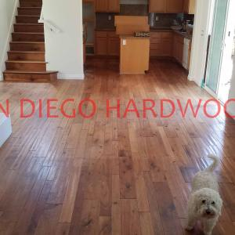
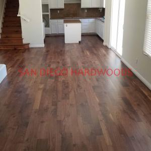

Est. 1990 • San Diego's Finest Hardwood Flooring Specialist
Hardwood Floor Refinishing Before & After Gallery
Explore real San Diego hardwood floor refinishing projects featuring dustless sanding, hardwood floor repairs, restoration, color changes, custom stain work, and dramatic before-and-after transformations completed by San Diego Hardwoods throughout San Diego County.
Not Every Hardwood Floor Needs Refinishing
Many hardwood floors can be dramatically improved without sanding. Our Bona Power Scrubber deep cleaning system removes years of embedded dirt, contaminants, and residue before applying a protective low-VOC maintenance recoat when appropriate.

Recent Before & After Hardwood Floor Projects
#1 Del Mar hardwood floor refinishing — solid maple floors professionally sanded and dust-free refinished with a custom off-white stain, giving this coastal home a brighter, modern look and long-lasting protection from everyday wear


#2 Encinitas Brazilian cherry hardwood restoration — floors repaired after water damage, then dust-free sanded and fully refinished to restore the rich color, durability, and lasting beauty of this home’s wood floor


#3 Solana Beach Brazilian cherry floor transformation — engineered cherry planks with worn, sun-faded red tones were dust-free sanded to remove the aluminum oxide finish, bleached multiple times, sample-stained for precision color matching, and then finished in a beach-style off-white stain with a low-sheen commercial water-based coating for a bright modern look built to last


#4 Del Mar ash hardwood floor refinishing — rare solid ¾-inch select ash flooring in this ocean-view home overlooking Torrey Pines Beach was dust-free sanded, sealed clear, and finished with a satin-sheen Bona Traffic commercial coating to highlight the natural grain and restore decades-old beauty, leaving the homeowners thrilled with the timeless result


Project 5
{kind=link}

{kind=link}

#6 Coastal maple hardwood floor refinishing in San Diego — four-inch solid maple that had been originally oiled but failed against ocean air, sun, salt, and daily wear was fully restored by San Diego Hardwoods with dust-contained sanding, upgraded to a low-sheen polyurethane system, and finished in a white stain with Bona Traffic HD Raw for a bright, durable, ocean-view floor that shows true sanding perfection


#7 Carmel Valley engineered maple floor refinishing — this top-quality Lauzon square-edge maple had faded to an undesirable amber-orange and showed extreme sun wear; San Diego Hardwoods dust-contained sanded off the aluminum oxide finish, then sealed the planks with Bona Amberseal wat-based sealer to complement the patinaed cabinetry, leaving this home with a flawless, modern floor restoration


#8 Golden Hill vintage Douglas Fir floor restoration — this late 1800s historic home near downtown San Diego revealed its original Doug Fir after decades under carpet; San Diego Hardwoods dust-contained sanded away old paint and surface damage, then applied a deep Jacobian stain and ultra-durable finish to transform the softwood into a striking, long-lasting centerpiece of the home, showcasing vintage floor refinishing at its finest


#9 Hillcrest wide-plank French oak installation — this restaurant near Bankers Hill, South Park, and Mission Valley received a premium seven-inch wide, random-length, square-edge engineered French oak floor; San Diego Hardwoods installed the light rustic grade planks on site, then finished them flat with a durable commercial coating to handle heavy foot traffic, creating a modern wide-plank look that’s highly sought after in today’s homes and businesses


#10 Golden Hill Douglas Fir floor refinishing with dust containment — in another late 1800s historic apartment near downtown San Diego, San Diego Hardwoods used an industrial belt sander connected to a Bona portable dust containment system to strip away paint and years of wear from vintage Douglas Fir planks; the floors were then stained in a rich Jacobian color and sealed with a satin commercial-grade finish, leaving a spotless, durable restoration that proves the effectiveness of true dust-free sanding
![#10 Golden Hill Douglas Fir floor refinishing with dust containment — in another late 1800s historic apartment near downtown San Diego, San Diego Hardwoods used an industrial belt sander connected to a Bona portable dust containment system to strip away paint and years of wear from vintage Douglas Fir planks; the floors were then stained in a rich Jacobian color and sealed with a satin commercial-grade finish, leaving a spotless, durable restoration that proves the effectiveness of true dust-free sanding — Before](/DOUGLAS FIR REFINISHING1.jpg)
![#10 Golden Hill Douglas Fir floor refinishing with dust containment — in another late 1800s historic apartment near downtown San Diego, San Diego Hardwoods used an industrial belt sander connected to a Bona portable dust containment system to strip away paint and years of wear from vintage Douglas Fir planks; the floors were then stained in a rich Jacobian color and sealed with a satin commercial-grade finish, leaving a spotless, durable restoration that proves the effectiveness of true dust-free sanding — After](/DOUGLAS FIR REFINISHING16.jpg)
#11 4S Ranch Brazilian cherry floor refinishing — this engineered cherry floor in North County San Diego, near Rancho Santa Fe and Carmel Mountain Ranch, was dust-contained sanded to remove its aluminum oxide coating, then sealed with a traditional oil-based sealer to deepen the rich cherry color and finished with a matte-sheen residential water-based coat; the result highlights the floor’s gorgeous detail, including custom cherry corner round, and restores decades of worn wood to like-new perfection
![#11 4S Ranch Brazilian cherry floor refinishing — this engineered cherry floor in North County San Diego, near Rancho Santa Fe and Carmel Mountain Ranch, was dust-contained sanded to remove its aluminum oxide coating, then sealed with a traditional oil-based sealer to deepen the rich cherry color and finished with a matte-sheen residential water-based coat; the result highlights the floor’s gorgeous detail, including custom cherry corner round, and restores decades of worn wood to like-new perfection — Before](/BENG CHERRY.jpg)
![#11 4S Ranch Brazilian cherry floor refinishing — this engineered cherry floor in North County San Diego, near Rancho Santa Fe and Carmel Mountain Ranch, was dust-contained sanded to remove its aluminum oxide coating, then sealed with a traditional oil-based sealer to deepen the rich cherry color and finished with a matte-sheen residential water-based coat; the result highlights the floor’s gorgeous detail, including custom cherry corner round, and restores decades of worn wood to like-new perfection — After](/BENG CHERRY 2.jpg)
#12 Hillcrest restaurant French oak installation and finishing — wide-plank, seven-inch random-length engineered French oak was installed and sanded flat on site in this Baker’s Hill commercial space near South Park and Mission Valley; San Diego Hardwoods applied the same durable commercial finish and natural tone as in the first phase, creating a smooth, modern wide-plank floor built to withstand heavy use and showcase today’s most desirable style


#13 Rancho Santa Fe hickory floor refinishing — this engineered hickory floor, originally distressed and badly sun-faded, was dust-contained sanded flat to remove wear and texture; San Diego Hardwoods then custom-mixed a stain color to achieve the perfect tone and sealed it with Bona Traffic HD for a satin, durable finish, restoring the floor’s elegance and durability in this North County estate


#14 Carmel Valley wide-plank hickory floor restoration — in this gorgeous San Diego home near Del Mar, solid hickory planks had suffered extreme sun fading and wear; San Diego Hardwoods dust-contained sanded the surface to raw wood and applied a natural color sealer to highlight the rich grain and beauty of the wide-plank hickory, bringing the floor back to life with a timeless, durable finish


#15 Rancho Santa Fe hardwood floor deep cleaning and recoating — just outside Solana Beach, this North County home had wood floors coated in layers of old wax that left the surface dull and uneven; San Diego Hardwoods performed a full professional cleaning and wax removal, then applied a fresh commercial-grade finish to restore the natural beauty and durability of the floors, giving the home a clean, refreshed look without a full sanding


#16 Downtown San Diego pine floor refinishing at Hooters — this solid pine floor in the Gaslamp District had taken years of heavy restaurant traffic and needed full restoration; San Diego Hardwoods dust-contained sanded the planks clean, then applied Bona Traffic HD, a two-part commercial polyurethane system in satin sheen, to deliver maximum durability and bring back the warm natural character of the pine, ensuring the floor can stand up to the demands of a busy downtown space


#17 Point Loma Brazilian cherry floor refinishing — this solid plank cherry floor in coastal San Diego was restored with dust-free sanding to remove years of wear; San Diego Hardwoods applied a clear sealer to highlight the deep, rich red tones, then finished with Bona Traffic HD, a two-part commercial polyurethane system, to deliver lasting protection and beauty; this project shows how Brazilian cherry can be refinished to perfection instead of replaced


#18 Scripps Ranch engineered white oak floor repair and recoating — in this San Diego home, San Diego Hardwoods carefully prepared the worn oak surface for proper adhesion, repairing problem areas before applying Bona Traffic HD in an extra-matte sheen; the commercial-grade polyurethane finish refreshed the natural beauty of the engineered white oak while delivering durable protection designed to last, proving that recoating is a smart solution to extend the life of quality hardwood floors without a full sanding
![#18 Scripps Ranch engineered white oak floor repair and recoating — in this San Diego home, San Diego Hardwoods carefully prepared the worn oak surface for proper adhesion, repairing problem areas before applying Bona Traffic HD in an extra-matte sheen; the commercial-grade polyurethane finish refreshed the natural beauty of the engineered white oak while delivering durable protection designed to last, proving that recoating is a smart solution to extend the life of quality hardwood floors without a full sanding — Before](/RECOAT OAK6.jpg)
![#18 Scripps Ranch engineered white oak floor repair and recoating — in this San Diego home, San Diego Hardwoods carefully prepared the worn oak surface for proper adhesion, repairing problem areas before applying Bona Traffic HD in an extra-matte sheen; the commercial-grade polyurethane finish refreshed the natural beauty of the engineered white oak while delivering durable protection designed to last, proving that recoating is a smart solution to extend the life of quality hardwood floors without a full sanding — After](/RECOAT OAK8.jpg)
#19 Carmel Valley solid walnut floor recoating — this San Diego home’s walnut planks had suffered sun fading and surface wear; San Diego Hardwoods refreshed the floor by applying a custom color to even out tone, then sealed it with Bona Traffic HD, a commercial-grade polyurethane finish, restoring the deep natural walnut look with durable protection designed to handle years of use


#20 Gaslamp San Diego walnut floor refinishing — in this Omni Hotel condo overlooking the Coronado Bay Bridge, San Diego Hardwoods dust-contained sanded engineered walnut flooring back to raw wood, then applied Bona Traffic HD for a durable, modern finish; the result is a flawless walnut floor restoration in a high-rise setting, combining dust-free sanding with a commercial-grade polyurethane system designed for long-lasting beauty and protection


See Whether Deep Cleaning Could Save You From a Full Refinish
San Diego hardwood floor deep cleaning and polishing service — often the right call before committing to a full dust-contained sand and refinish.